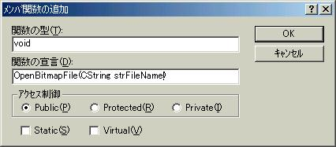
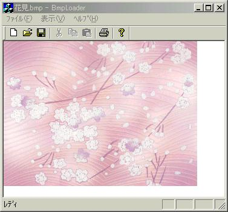

SDIやMDIのアプリケーションの雛型がAppWizardによって作られると、ディフォルトでDocument-Viewアーキテクチャが作成されることはご存知だと思います。今回はDoc-View構造をどのように使用するべきかを解説し、ビットマップの読み込みを行います。
| 9.なぜDocument-View構造になっているのか? |
MFCでは、データを管理するDocumentと、そのデータを表示するViewが対になって構成されています。今回作成されるSDIアプリケーションは、Document-View構造を利用しているため(AppWizardを利用した場合ディフォルトではDocument-View構造となる)、1つのフレームウィンドウがViewとDocumentを持っています。もしMDIアプリケーションを作成した場合は、1つ1つの子ウィンドウがViewとDocumentを持つので、1つのアプリで異なるデータを開き、表示することが出来るのです。
Document-View構造についてMSDNには次のように記述されています。
ドキュメント
ユーザーが[ファイル] メニューの [開く] コマンドで開き、[ファイル] メニューの [上書き保存] コマンドで保存するデータ単位を表す。
ビュー
ドキュメントに割り当てられ、ドキュメントとユーザー間を仲介する。ドキュメントのイメージをスクリーン上に描画 し、ユーザーの入力をドキュメントに対する操作として解釈する。
つまりデータを管理する構造と、データを表示する構造を分離することで、プログラミングをよりスマートに分かりやすくしていると思えばいいのです。
ViewクラスとDocumentクラスは１対１もしくは複数対１で結びつけられることになっています。この結びつけは、今回作成しているアプリケーションでももちろん行われていて、BmpLoader.cppの中のCBmpLoaderApp::InitInstance()で行われています。
| DocumentとViewの結び付けが行われているところ(BmpLoader.cpp内) |
| // アプリケーション用のドキュメント
テンプレートを登録します。ドキュメント テンプレート // はドキュメント、フレーム ウィンドウとビューを結合するために機能します。 CSingleDocTemplate* pDocTemplate; pDocTemplate = new CSingleDocTemplate( IDR_MAINFRAME, RUNTIME_CLASS(CBmpLoaderDoc), RUNTIME_CLASS(CMainFrame), // メイン SDI フレーム ウィンドウ RUNTIME_CLASS(CBmpLoaderView)); AddDocTemplate(pDocTemplate); |
詳しくは述べませんが、DocumentとViewとMainFrameをグループにして、最後にこのグループを登録していると思ってくれればいいです。したがってこの操作を何回か繰り返すと1つのDocumentと複数のViewが結び付けられるのです。
今回作成するBitmapLoaderは、以下のようにしてファイルを読み込むことにします。
1.Documentクラスで、ファイルを開くダイアログからユーザに開くビットマップのファイル名を指定させる。
2.Viewクラスで、上で指定されたファイル名を使って、ビットマップデータを構築しメモリDCに持たせる。
| 10.ビットマップファイルを選択する。 |
さきほど述べたようにDocumentクラスは、[ファイル] メニューの [開く] コマンドで開く操作を提供しているので、開くべきビットマップファイル名を選択させるプログラムを、Documentクラス内にコーディングします。
1.[ファイル]-[開く]メニュー(ID_FILE_BMP_OPEN)をインプリメントする
ClassWizardを起動し、メッセージタブ内において、以下のように選択し、OKを押します。
クラス名 CBmpLoaderDoc
オブジェクトID ID_FILE_BMP_OPEN
メッセージ COMMAND
2.CBmpLoaderDoc::OnFileBmpOpen()を以下のように編集する
| OnFileBmpOpen()の編集(BmpLoaderDoc.cpp内) |
| void
CBmpLoaderDoc::OnFileBmpOpen() { // ビューのポインタを取得する} |
解説
CBmpLoaderView* pView = ((CBmpLoaderView*)(((CFrameWnd*)(AfxGetApp()->m_pMainWnd))->GetActiveView()));
ビューにアクセスするためのポインタを取得します。今は使用しませんが後で使用するのでとりあえず書いておきます。なおこのソースを書くときに、#include
"BmpLoaderView.h"をソースファイルの頭に書いておいてください。
CFileDialog cDlg(TRUE, "bmp","*.bmp", OFN_HIDEREADONLY
| OFN_OVERWRITEPROMPT,"bitmap files(*.bmp)|*.bmp||",NULL);
ファイルを開くダイアログを作成します。第一引数がtrueの時はファイルを開く、falseの時はファイルを保存になるので、trueを選択します。残りの引数は、開くことの出来るファイル構造をビットマップファイルだけにしています。
cDlg.m_ofn.lpstrTitle = "Open Bitmap File";
ダイアログのタイトルを設定します。別になくても結構です。
if(cDlg.DoModal() != IDOK) return;
ダイアログを開きます。ファイルが指定されてOKボタンが押された時のみ、DoModalの戻り値がIDOKになるので、それ以外の場合はreturnで関数を抜けてしまいます。
SetTitle(cDlg.GetFileName());
指定したファイル名を取得し、ウィンドウのタイトルに設定します。
実行し、[ファイル]-[開く]を押して、何かビットマップファイルを選択してください。選択されたファイル名がタイトルに表示されていたらOKです。まだビットマップを構築していないので、何も表示されません。次にビットマップを構築していきます。
| 11.ビットマップを構築する。 |
先ほどのコーディングで、ビットマップファイルのファイル名を取得することが出来ましたが、ビットマップの情報を取得したわけではありません。したがってビットマップの情報を取得するコーディングをViewに記述する必要があります。記述の準備のためにメンバ関数を追加します。
1.ClassViewのCBmpLoaderViewクラスを右クリックし、メンバ関数の追加を押す。
2.以下のように設定してOKを押す。
この作業を通してvoid CBmpLoaderView::OpenBitmapFile(CString strFileName)関数が追加されているはずです。引数のstrFileNameは、ビットマップのファイル名となります。
| メンバ関数の追加 OpenBitmapFile(CString strFileName) |
|  |
3.OpenBitmapFile関数をコーディングする。
| メンバ関数の追加 OpenBitmapFile(CString strFileName) |
| void
CBmpLoaderView::OpenBitmapFile(CString strFileName) { BITMAP bmp; // ビットマップ構造体} |
解説
hBmp = (HBITMAP)LoadImage(AfxGetApp()->m_hInstance,strFileName,IMAGE_BITMAP,0,0,LR_LOADFROMFILE);
LoadImage関数はイメージを読み込むWindowsAPI関数です。MFCにはファイルからイメージを読み込む関数がないため(私が知っているかぎりですが)、WindowsAPIを利用しています。戻り値はビットマップハンドル(ポインタみたいなオブジェクト操作子)です。
(引数)
AfxGetApp()->m_hInstance アプリケーションのインスタンスのハンドル
strFileName イメージが入っているファイルの名前
IMAGE_BITMAP ロードするイメージのタイプ
0 ビットマップ読み込みでは使用しないので0を指定しておきます。
0 ビットマップ読み込みでは使用しないので0を指定しておきます。
LR_LOADFROMFILE ロードするイメージがファイルであることを指定するフラグ
if(hBmp == NULL)
{
AfxMessageBox(_T("読み込みに失敗しました"));
return ;
}
LoadImage関数によって得られたビットマップハンドルがNULLの場合、イメージのローディングに失敗したことなのでreturnします。
dcMem.SelectObject(pOldBitmap);
ストックしておいたビットマップを再選択し、それまで指定されていたpBitmapを外しておきます。
pBitmap->DeleteObject();
先ほどまで選択されたいたビットマップの情報を削除します。この関数を実行する前に必ずメモリDCからビットマップを外しておかなくてはいけないために、いったんストックしておいたビットマップを再選択しておいたのです。
pBitmap = (CBitmap*)CBitmap::FromHandle(hBmp);
LoadImage関数で得たビットマップハンドルからCBitmapオブジェクトのポインタを取得します。MFCにてメモリDCにビットマップを選択させるには、HBITMAPからCBitmapオブジェクトに変換しなくてはならないからです。
pOldBitmap = dcMem.SelectObject(pBitmap);
得られたビットマップオブジェクトへのポインタをメモリDCに選択させます。この時点でメモリDCにビットマップファイルの描画内容が書き込まれています。したがって後は転送することでビューに表示されます。
InvalidateRect(&cClient);
クライアント領域を更新します。更新するとOnDrawが呼ばれるので転送作業が行われます。
4.転送指示を出すコードを書く
このままでは、CBmpLoaderView::OpenBitmapFile(CString strFileName)を呼び出すところはどこにもありません。この関数の引数は、ビットマップファイル名ですから、このファイル名が取得できた段階で呼び出されるのがベストです。したがってCBmpLoaderDoc::OnFileBmpOpen()
に呼び出すコーディングを行えばよさそうですね。CBmpLoaderDoc::OnFileBmpOpen() の中で赤い行を追加します。先ほどビュークラスへのポインタを取得しましたが、これはビュークラスのOpenBitmapFile関数を実行するためなのです。
| OnFileBmpOpen()の編集2(BmpLoaderDoc.cpp内) |
| void
CBmpLoaderDoc::OnFileBmpOpen() { // ビューのポインタを取得する} |
実行してみましょう。これでビットマップファイルが読み込めるはずです！再描画処理を行っているので、ウィンドウの移動・リサイズを行っても、ビットマップがしっかり表示されているでしょうね。
| ここまでの実行例 |
|  |
さて次章では、ちょっとしたこと＆リリースビルドを行ってソフトウェアにしちゃいます。
[Next]
[Previous]
[Home]